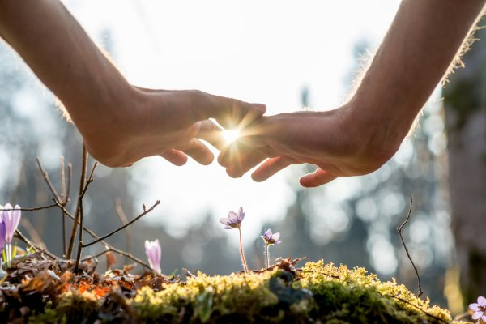
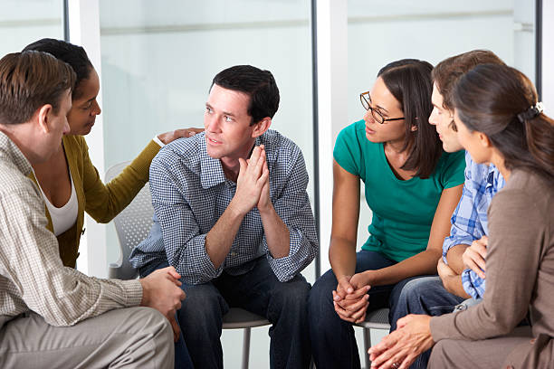

Everyday the number of people who have been sexually assaulted increases. Right now, 81% of women and 43% of men have experienced sexual assault in their life. This can be seen on these charts.
Our job is to create a safe place for the victims to either heal or escape their dangerous situation. Our job is to lead you in the right direction for which sites you should visit and what numbers you should call to start your journey of healing. This could range from suggesting sites and numbers that can help you find a safe house or find a place that provide therapy that is right for them. These are a list of websites to learn more about ways you can help and what to do in certain situations. Click here help after rape and Sexual assault RAINN Here is where you can get better educated and find resources.
Here are some numbers to call for help. RAINN - 800.656.HOPE (4673) anonymous - 800-010-120 between 7.30am and 11.30pm, 7 days. Rape Crisis national freephone helpline - 0808-802-9999 (12-2.30pm and 7-9.30pm every day of the year)
Womenshealth Where you can learn more about what abuse, assault and consent is and answers to some of your questions. Here is a few links to pages that you can donate to for organizations that can help. Donate Here